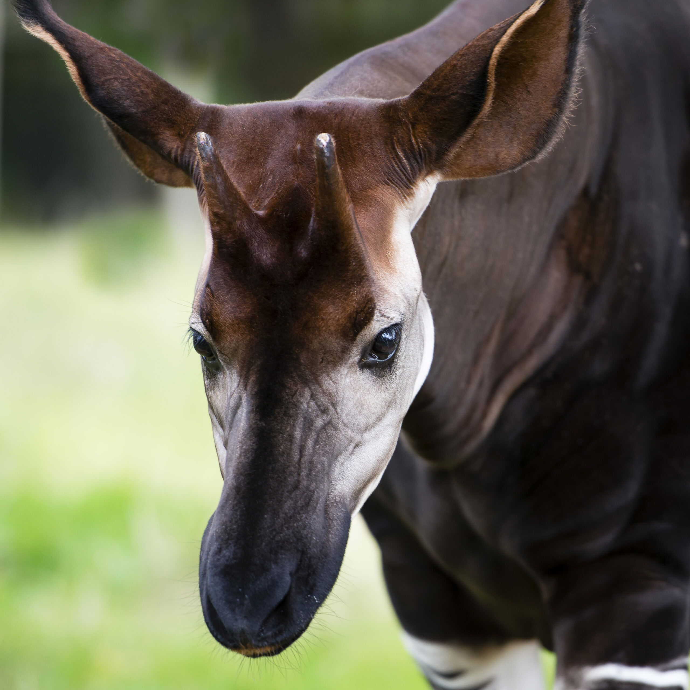
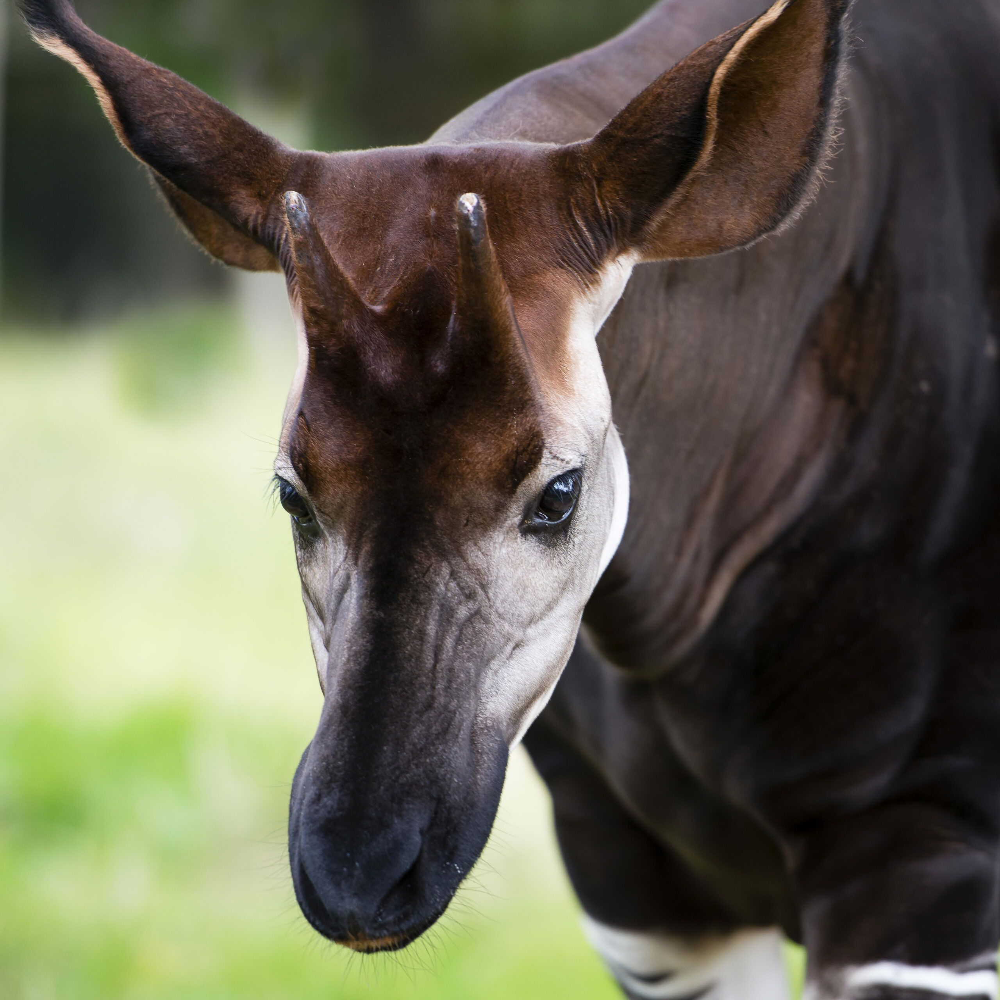

Fun facts about Okapis according to nationalgeographic.com
SIZE: Length, eight feet; height, five feet
The okapi looks more like a cross between a deer and a zebra
The okapi lives among dense flora in the rainforest.
Active during the day, the elusive okapi prefers to be alone.
WEIGHT: 440 to 660 pounds